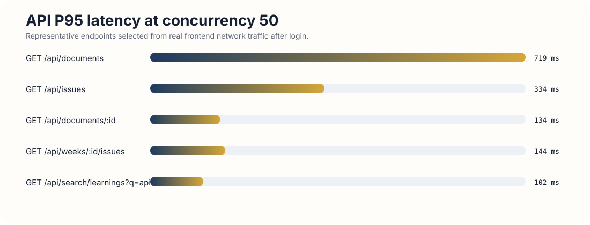
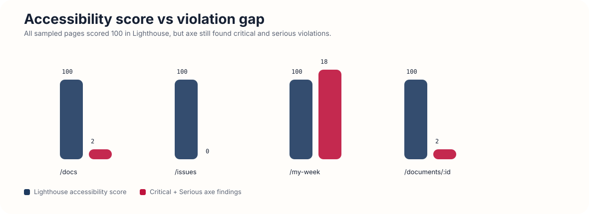

Type safety by package

This folder holds the structured outputs behind the final submission. The root submission files stay in docs/g4/. Everything here is support material: raw baseline data, extracted CSVs, generated charts, methodology notes, and earlier working artifacts that are no longer part of the final hand-in surface.
Final written report and final visual report remain at the g4 root.
CSV and JSON extracts for every audit category.
SVG charts for the biggest audit signals and tradeoffs.
Removed .DS_Store and moved older support artifacts under this folder.
docs/g4/.DS_Storeaudit-report-walkthrough.html into docs/g4/audit-resources/codebase-orientation-reference.md into docs/g4/audit-resources/ship-architecture-reference.html into docs/g4/audit-resources/| Path | Purpose |
|---|---|
data/ | machine-readable baseline metrics extracted from the audit |
charts/ | SVG charts and this dashboard for quick evidence review |
measurement-commands.md | commands and methodology references used during the audit |
audit-report-walkthrough.html | annotated explanation of the audit decisions and tool choices |





data/baseline-summary.jsondata/type-safety-by-package.csvdata/type-safety-top-files.csvdata/bundle-top-dependencies.csvdata/api-latency.csvdata/db-query-flows.csvdata/test-suite-summary.csvdata/runtime-summary.csvdata/accessibility-baseline.csvmeasurement-commands.mdaudit-report-walkthrough.htmlREADME.mdThe recommended repo-facing presentation is:
docs/g4/audit-report.mddocs/g4/audit-report-visual.htmlEverything in audit-resources/ is supporting evidence and backup material if someone asks how the baseline was built.